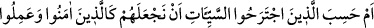
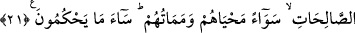

21. Yoksa kötülük işleyenler ölümlerinde ve sağlıklarında kendilerini, inanıp iyi
ameller işleyen kimseler ile bir mi tutacağımızı sandılar? Ne kötü hüküm
veriyorlar!
“Yoksa kötülük işleyenler” “Em” kelimesi “munkatıa” olup muhtevasındaki “bel”
mânâsı, birinci beyândan ikinci beyâna intikal içindir. “Hemze”, vâki olanı inkâr ve bu
durumu sitem yoluyla husbanı/sanmayı inkâr içindir. Yoksa bizzat bir şeyin vukûunu
inkâr yoluyla değildir. “İctirah”, “iktisab” yâni “kazanmak” demektir. Çalışan organlara
“cevarih” denilmesi de bundandır.
Müfredât kitabında şöyle denilmiştir: Av köpeğine, pars ve avcı kuşlara “câriha”
denilmiştir. Çoğulu “cevârih”tir. Bunlar, avlarını yaraladıkları yahut avı kazanıp
yaraladıkları için böyle denmiştir. Çalışan organlara da “cevârih” denilmesi yaralama
yahut kazanma işine teşbih edilmesindendir. “Seyyiât” kelimesinden murad ise küfür ve
mâsiyetlerdir. Onların hüküm ve itibarda bu kadar kötü hallerine rağmen bu kelime
mamülüyle beraber “husbân” kelimesinin iki mefûlü yerine kâimdir. Güzel amellerine
rağmen onlara keramette ve derece yükseltmekte buradaki “kaf” “caal” kelimesinin
ikinci mefûlüdür.
“ölümlerinde ve sağlıklarında kendilerini,” Yâni her iki grubun hayatları ve
ölümleri demektir. “Sevâen” ifâdesi zarf ve mevsûldeki zamirden haldir. Çünkü bu
ifâde zarf ve mevsûlun zamirlerine şâmildir. “Sevâ” kelimesi “müstevî” mânâsında olup
“mahyâhüm ve memâtühüm” kelimeleri fail olmak üzere merfûdurlar.
Mânâ şudur: Yoksa onlar kendilerinin müminler gibi olacağını, hepsinin hayat ve
ölümlerinin eşit mi olacağını zannettiler. Hayır asla bu konulardan hiç birinde eşit
olmazlar. Müminler hayatlarında îmân ve tâatın izzet ve şerefi içinde, ölümlerinde ise
Allah’ın rahmet ve rızasındadırlar. Bunun için Peygamberimiz (s.a.) suffa ashâbını
mescidde görüp, “hayat sizin hayatınız, ölüm de sizin ölümünüzdür” buyurmuşlardır.
Kâfirler hayatta küfür ve mâsiyetlerin zillet ve alçaklığında, öldüklerinde ise Allah’ın
lânet ve ebedî azâbındadırlar.
“inanıp iyi ameller işleyen kimseler ile bir mi tutacağımızı sandılar?” Kureyş
kâfirleri, “Biz âhirette -şâyet âhiret varsa- müminlerden daha iyi durumdayız”
diyorlardı. Nihâyet onlar, “Biz malca ve evlatça daha çoğuz, biz azaba uğratılacak
değiliz” (Sebe’, 34/35) diyorlardı. Zira dünyada aziz olan âhirette de azizdir.
Denilmiştir ki; burada esasen murad edilen, hayatta olduğu gibi, iki grubun ölümden
sonra da eşit olmalarını inkârdır. Çünkü iyiler ve kötüler rızık ve sağlık bakımından
hayatta eşittirler. Ancak ölümde durum farklı olacaktır.